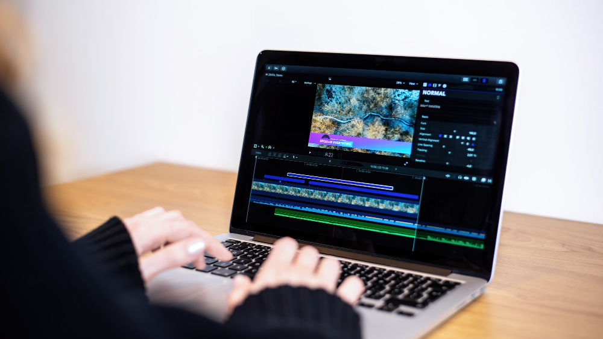
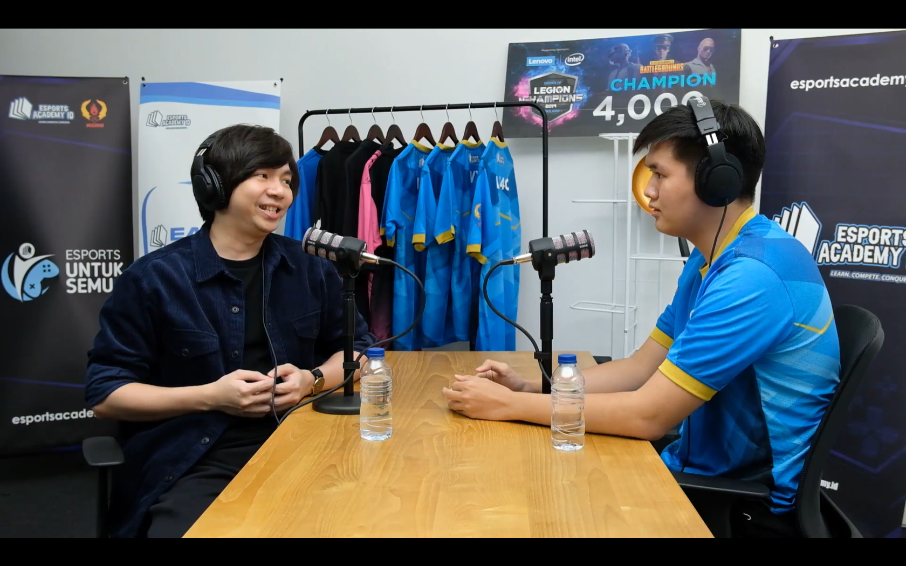
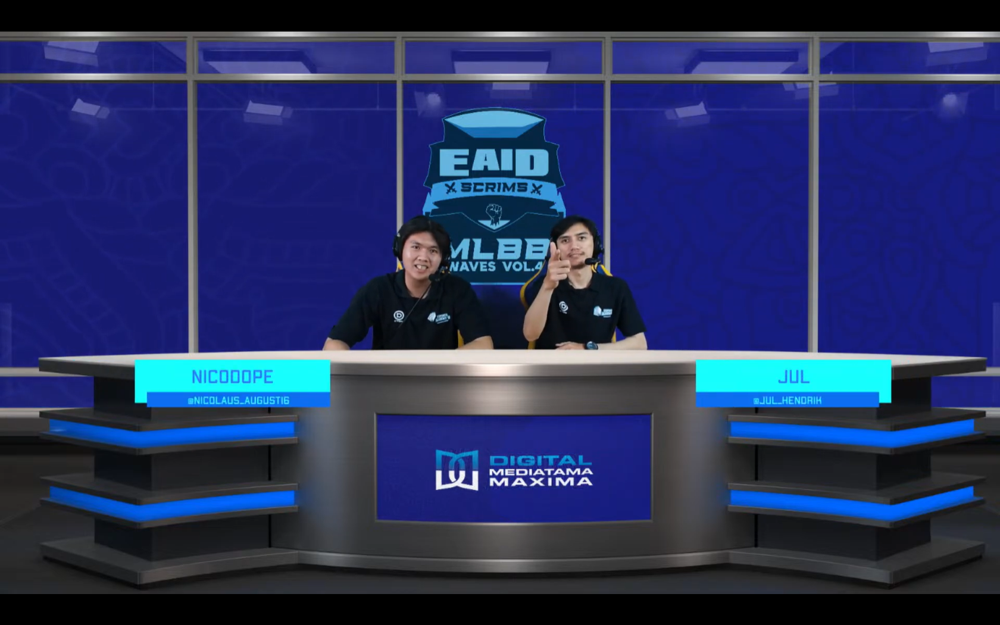

Di proyek ini, saya bertanggung jawab terhadap seluruh proses kegiatan marketing secara digital seperti social media promotion plan, content for KOL, dan mencari liputan di media berita.
Dan juga melakukan promosi secara langsung seperti melakukan audiensi ke sekolah-sekolah untuk memperkenalkan acara

Berikut merupakan data analitik dari seluruh social media sebuah brand yang aku kelola baik itu perusahaan maupun organisasi

Sebagai seorang videografer, saya juga ahli dalam pembuatan produksi video konten dimulai dari merekam, merancang konsep, dan juga mengedit video. Berikut merupakan hasil karya video yang saya buat

Berikut merupakan hasil karya konten yang saya buat dengan tujuan untuk meningkatkan brand awareness, mempromosikan produk/acara, dan lain-lain.

Saya berpengalaman dalam merancang konsep dan menjalankan operasional siaran langsung di social media Titkok, Instagram, dan YouTube